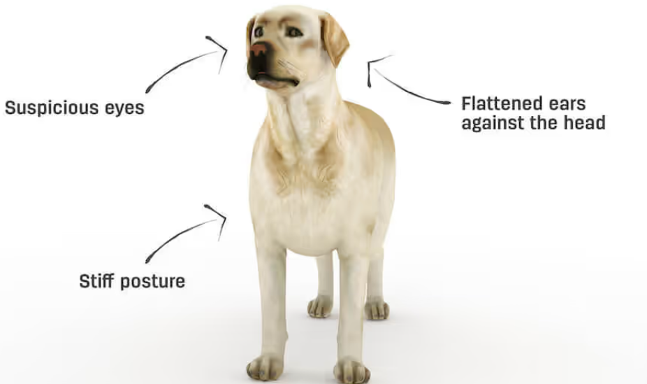
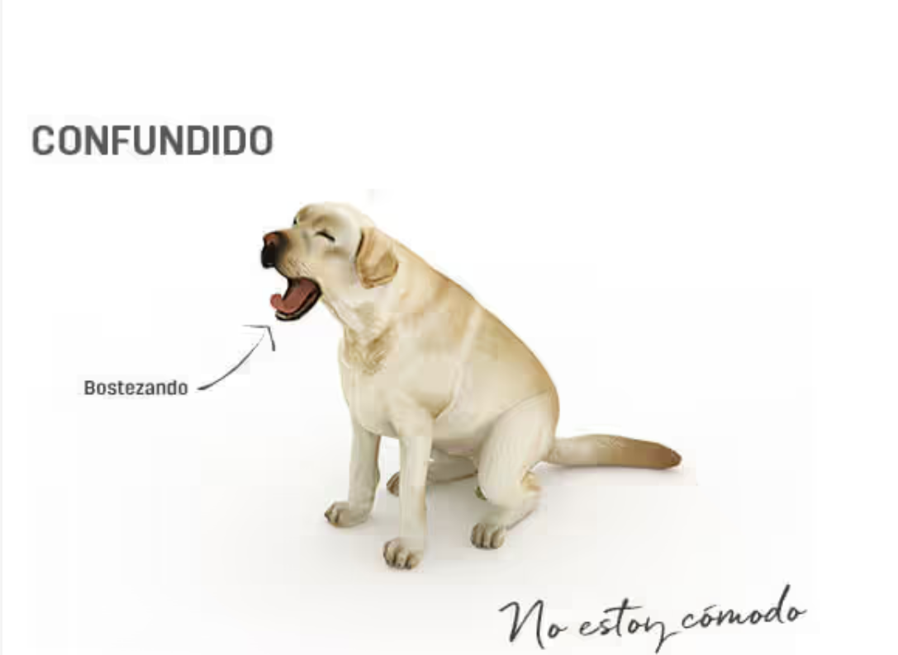
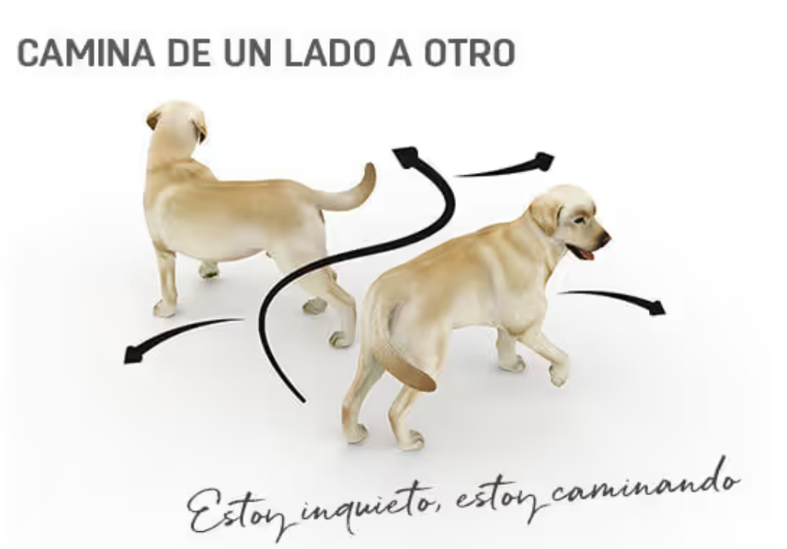
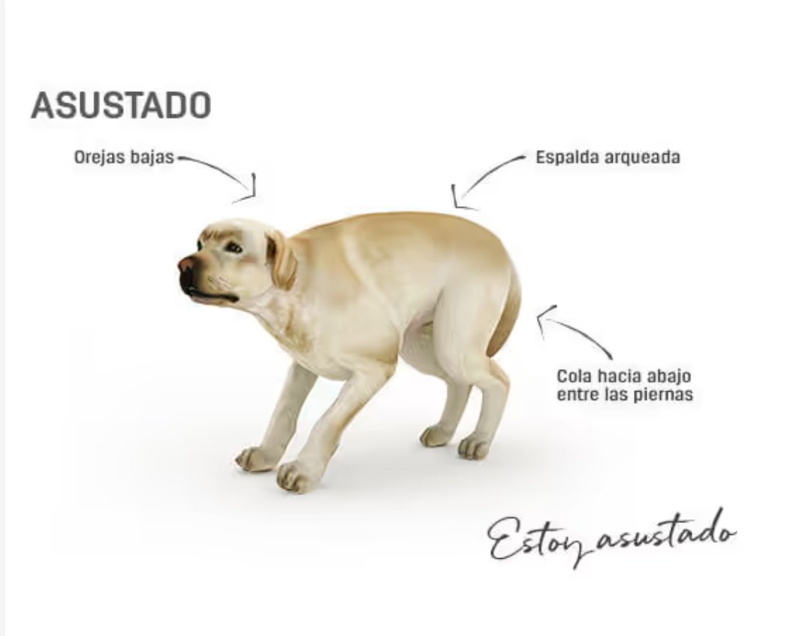

1.-Contento Tu perro te está diciendo: “Soy todo tuyo y estoy encantado de interactuar contigo”.
2.-Juguetón Tu perro te está diciendo: “¡Es el momento de jugar! Por favor vení y jugá conmigo… te estoy esperando”. Esta invitación a jugar puede estar acompañada de ladridos nerviosos y ocasionalmente, para los perros que no han sido bien educados, pequeños mordiscos.
3.-Desconfiado Tu perro te está diciendo: "¿Fruncís el ceño cuando no entendés algo completamente? ¡Yo puedo hacer lo mismo! Dame algo de tiempo para evaluar la situación".
4.-Confundido No, ¡tu perro no está cansado! Te está queriendo decir: “No estoy cómodo, estoy intentando interpretar esta situación desconocida para mí. ¡Por favor envíame mensajes claros de lo que está pasando!”.
5.-Nervioso ¡No solo se relamen cuando están hambrientos! Te está queriendo decir: “Estoy intentando descifrar la situación, pero esta incertidumbre me hace sentir incómodo. ¡Por favor envíame señales claras de que todo está bien para aclarar esto y me relajaré!”.
6.-Inquieto, camina de un lado a otro Tu perro te está diciendo: “No entiendo lo que está pasando. Noto que algo va mal así que no puedo relajarme”.
7.-Alerta Tu perro te está diciendo: “Noto que algo raro está pasando y me pregunto que será. No estoy nada relajado, necesito saber si hay alguna amenaza o si tengo que actuar de alguna manera concreta. Déjame un tiempo para que aclare esta situación, y por favor no me toques ya que me puedes asustar y hacer que reaccione de forma defensiva”.
8.-Asustado ¡Tu perro está asustado, y necesita tu ayuda! “Oh no…. Si pudiera desaparecer…. Por favor no trates de tocarme o reconfortarme, estoy demasiado asustado para interaccionar contigo en este momento. Tu actitud frente a esta situación aterradora me tranquilizará y consolará".
